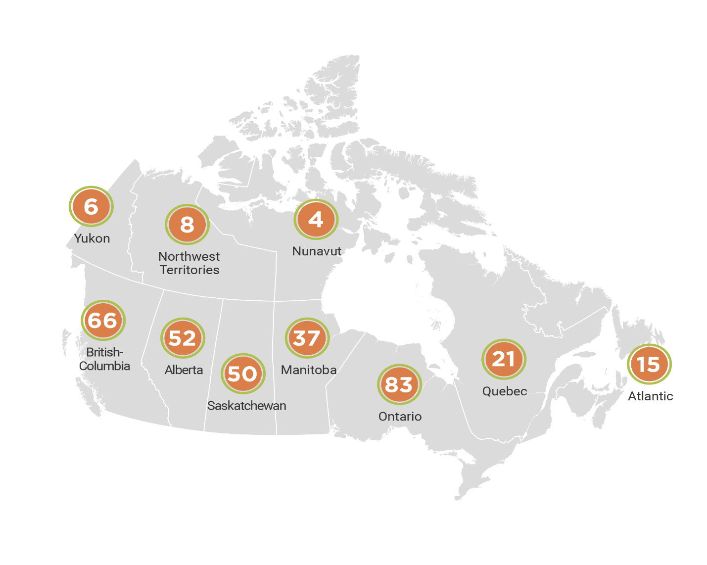

Case studyIndigenous
Homes
Innovation Initiative

1. Executive Summary
When working with Indigenous communities, the typical Challenge Prize approach needs to be adapted in new and creative ways.
The Indigenous Homes Innovation Initiative aims to accelerate effective change by inspiring and harnessing Indigenous innovation and knowledge, recognizing that the best solutions come from Indigenous peoples who live their own needs every day. The Initiative goes beyond existing Government of Canada’s housing programs, and emphasizes community priorities, innovative ideas, and new partnerships. It also supports a wrap-around approach to the refinement of proposals and concepts that have promise of positive impact but have yet to be fully developed.
This case report introduces the reader to how this Initiative unfolds in the Canadian context, how it is an important effort by the Government of Canada toward program and service reform, and how a challenge prize model needs to be adapted to better suit an Indigenous context.
2. The Challenge Prize Approach

2.1 About Impact Canada
Impact Canada, launched in the fall of 2017, drives public sector innovation by supporting the implementation of high-priority programs, projects and services designed to improve outcomes for citizens. It is a vehicle whereby the Government of Canada can test innovations and generate evidence of which efforts work best to create greater public value in high priority areas.
Led out of the Privy Council Office of Canada, it is part of a growing international trend to have dedicated innovation organizations focused on improving outcomes at the centre of government. It champions the application of outcomes-based approaches using innovation methods such as challenges, behavioral insights, and pay-for-success funding, backed by rigorous evaluations.
2.2 Why a Challenge
Challenge Prizes are unique public policy tools that allow governments to identify problems and reward those who solve them.
Challenges are an open innovation approach, meaning that they are designed to crowd-in innovative ideas and solutions from a wide variety of actors and sources to expand the Government’s problem-solving abilities. Challenges are designed to have a “look and feel” that is different from the types of funding programs that governments and their stakeholders are accustomed to running and participating in.
-
Read more
Challenges provide incentives (both financial and non-financial) to encourage a broad range of innovators to tackle problems where solutions are not apparent, or current responses are not achieving the desired results. Incentives are typically structured through a stage-gated approach, where challenge participants receive incentives at different stages of the challenge.
Challenges aim to solve big problems and accelerate progress towards ambitious goals and have a history of producing major breakthroughs in human knowledge and practice. They do this by shining a powerful light on an issue or opportunity and providing an incentive for innovators to prioritize the challenge goal.
3. Indigenous Services Canada housing & infrastructure reform
3.1 About Indigenous Services Canada
Indigenous Services Canada (ISC) is the lead department for the Indigenous Homes Innovation Initiative. ISC works collaboratively with partners to improve access to high quality services for First Nations, Inuit, and Métis. Their vision is to support and empower Indigenous peoples to independently deliver services and address the socio-economic conditions in their communities, with the objective of gradually giving effect to the transfer of services to Indigenous partners.
"[The Indigenous Homes Innovation Initiative] is a new way of doing business... They're reaching out. It's exciting because we've never been invited before".- Dr. Luugigyoo Patrick Steward, Chair of the Royal Architectural Institue of Canada's Indigenous Taskforce.Featured in Canadian Architect magazine, fall 2019.
The Housing and Infrastructure Service Reform Directorate at ISC is working towards transforming the delivery of infrastructure services, programs and resources. The Housing and Infrastructure Service Reform Directorate worked with Indigenous partners to launch the Indigenous Homes Innovation Initiative, with the ultimate goal of applying key insights from the Initiative to the broader policy reforms taking place in Indigenous housing and infrastructure.
3.1 Why the Indigenous Homes Innovation Initiative?
Indigenous peoples experience some of the worst living conditions in Canada, and limited access to transitional or supportive housing options; the last several years have seen broad consensus that federal Indigenous housing programs are not working, and need to be substantively transformed.
Given the immediate housing issues that Indigenous communities face, ISC’s current housing funding – provided under the Capital Facilities and Maintenance Program - is used primarily for immediate needs and rapid construction in on-reserve communities. In this context, building designs are not always well adapted to the full spectrum of geographic and cultural settings for which they are intended. Indigenous partners have identified the need to test innovative solutions that may support systemic long-term change and improvements to current programming – difficult to do given the existing pressures.
-
Read more
Impact Canada has also explored new models for Indigenous innovation as part of a broader Government of Canada effort to seek new approaches to build partnerships with Indigenous communities to improve outcomes in relevant ways. For example, the Indigenous Off Diesel Initiative, led by Natural Resources Canada, will support Clean Energy Champions and their communities with tailored clean energy training, access to expertise and financial resources to develop and start implementing an ambitious diesel reduction plan.
Indigenous initiatives open a door to exploring ways to advance the relationship with Indigenous peoples in Canada, partnering directly with Indigenous experts to address barriers and exploring ways to effectively accommodate cultural perspectives with sensitivity, humility and compassion to re-shape the colonized approaches that historically defined Canada.
Borrowing elements from challenge-based approaches, Indigenous innovation initiatives under Impact Canada rely less on the competitive aspects in favor of a more holistic, community-oriented frame that values interconnection and communal values over individual triumphs. Impact Canada is currently examining the features of these approaches that are both similar and distinct from traditional challenge-based programs.
They aim to bring forward ideas inspired by Indigenous knowledge and ways of being, regardless of their stage of development, while finding pathways to develop these into sustainable solutions that can have meaningful, positive impacts on Indigenous communities.
The Indigenous Homes Innovation Initiative was initially conceived similar to a prize challenge – where innovators would submit ideas and compete for prize funding to implement them. Indigenous partners quickly told the Government of Canada this model did not align with Indigenous priorities or values, highlighting the following:
- Indigenous innovation comes from access to collaborative networks, not competition;
- Rather than awarding prizes for good ideas, there is a need to place greater emphasis on developing these ideas – the main barrier to the construction of housing that is designed by and for Indigenous communities; and,
- Indigenous people must define this initiative rather than the Government of Canada.
After integrating these crucial design elements, the Indigenous Homes Innovation Initiative was launched in April 2019.
4. Design: The Indigenous Homes Innovation Initiative
4.1 Leveraging the Impact Canada Terms and Conditions
The Impact Canada Terms and Conditions provide an ideal way to explore changes to ISC housing programs; rather than make sweeping changes to federal funding authorities, the Terms and Conditions have been used to invite Indigenous people to provide their ideas in a flexible and collaborative funding environment. Through Impact Canada, the following flexibilities were accessed to try a new approach to the delivery of housing services for Indigenous communities:
-
Exemption to the Policy on Transfer Payments to allow outcomes-based rather than project-based funding
ISC funding has been allotted to projects in collaboration with Indigenous experts based on the capacity needs of the project leads and the forecast costs of the project – rather than a list of eligible expenditures;
-
New project intake and assessment methods
Where ISC’s main housing and infrastructure programming has a Priority Ranking Framework that emphasizes health and safety, the Indigenous Homes Innovation Initiative uses a simple idea submission form that emphasizes projected impact on socioeconomic outcomes;
-
Ability to fund off reserve and revenue-generating projects
The Impact Canada Terms and Conditions were used to fund projects outside the Terms and Conditions of ISC’s Capital Facilities and Maintenance Program – specifically, projects off reserve and/or that are intended to generate community revenue are prohibited under ISC’s main program;
-
Transferring funding responsibility to an Indigenous partner
The Project Plan ISC submitted to Impact Canada indicated it may work through an Indigenous partner to deliver funding. Using this permission, ISC worked to craft a special contribution agreement that handed funding control and responsibility to one of its main partners, the Council for the Advancement of Economic Development Officers, allowing the initiative to be administered with speed and flexibility.
-
Co-development and co-investment with Indigenous partners
The innovative nature of the project made it an ideal opportunity for co-development with Indigenous partners. ISC engaged an Indigenous Steering Committee to determine the focus areas, eligibility and assessment criteria for the Initiative, and subsequently to select projects to recommend for approval. ISC also worked with Indigenous architects and academics in the design of the initiative.
4.2 Initiative Objectives
The following four (4) main objectives encompass this Initiative:
- Deliver social and economic benefits for Indigenous communities.
- Take a collaborative approach by establishing new partnerships between Indigenous and non-Indigenous communities and organizations, including private and not-for-profit sectors.
- Implement various sizes and types of projects in a range of communities – large or small, on and off reserve, remote and urban across the country.
- Share lessons learned from implemented projects.
5. Impact: What results do we expect to see?

5.1 Effective and Efficient Government: the Original Rationale for the Initiative
5.1.1 Reforming the ISC Housing Service Delivery Model
ISC’s current funding approach for housing is needs-based and focused on health and safety and is limited to an on reserve context (for First Nations). Funding cannot typically be used for projects that generate community revenue nor does it integrate well with other programming that focus on social supports (i.e. wrap around services). The Initiative pilots an outcomes-based approach to housing that allows greater flexibility of funding – where Indigenous people identify why their proposed approach will lead to better outcomes in community wellbeing, and spend their funding accordingly.
The Initiative also focuses on finding ways to make it easier for Indigenous peoples to live in safe, appropriate homes. For example, a significant proportion of First Nation individuals live off-reserve and are largely ineligible for targeted federal infrastructure programming. To address this, the Initiative accepted applications from Indigenous organizations and individuals offering housing ideas that addressed the needs of First Nations living on or off reserve, Inuit and Metis.
5.2 Process Outcomes
-
5.2.1 Enhanced Public Awareness of a Problem or issue
While not an intended outcome, the initial conception of the initiative as a ‘challenge’ sparked public conversation about the federal government’s approach to Indigenous housing. Coverage by media outlets such as CBC referenced ‘the Hunger Games of Indigenous housing’ and thought leaders such as Indigenous lawyer and professor Pamela Palmater weighed in; Palmater was interviewed by Aboriginal People’s Television Network and the Senior Director of Housing and Infrastructure at ISC was subsequently interviewed as well. Chiefs, notably in Ontario, expressed their views to the federal government and in the media – in Ontario, Chief Shining Turtle of Whitefish River First Nation was adamantly opposed to the challenge while Chief Maracle of Mohawks Bay of Quinte announced his community would submit an application. Public discussion focused on the historic level of investment in Indigenous housing, and the competitive mechanism. In this way, the federal government had an unanticipated and difficult but ultimately productive engagement on the issue.
-
pNew talent has certainly been mobilized through the cohort of 24 innovators selected to participate. The group is a range of innovators from across the country – from seasoned housing developers, to Chiefs, to social service delivery practitioners, to individuals who simply have good ideas. For new entrants to the area, resources provided include project coordination funding, hands-on mentorship from Indigenous architects and funding to engage their communities and refine their ideas into an implementable proposal, while expanding their skills and expertise. Notably, one project is assisted by Indigenous architecture students from the University of Manitoba; with a dedicated focus on Indigenous elements of architecture.5.2.2 New Talent Mobilized
-
Collaboration and Partnerships
The Initiative takes a collaborative approach by establishing new partnerships among Indigenous communities and organizations, including private and not-for-profit sectors. These new partnership models intend to provide mentorship and capacity building and support. This approach aims to increase collaboration, working relationships, and knowledge sharing among Innovators and their communities. Notable partnerships include:
- SC’s relationship with the Council for the Advancement of Native Development Officers (Cando), a First Nation organization that helped coordinate logistics for the accelerator launch and, following the launch, has taken on delivery of the program;
- the Indigenous Steering Committee, a group of First Nation, Métis and Inuit housing experts who were instrumental in shaping the Initiative and selected 24 projects out of 342 submissions, using a consensus-based decision-making model;
- the participation of the Royal Architectural Institute of Canada’s Indigenous Taskforce, which advised the Steering Committee on technical needs for the Initiative and whose members are acting as mentors for project teams; and,
- MASS Design Group – Sustainable Native Communities Design Lab, an American non-profit architectural group focused on architectural design and impact through community engagement, with a range of Native American community partnerships. MASS helped design an intensive 4-day workshop enabling Innovators to assess their project readiness; providing tools and resources that offer a viable roadmap to effectively managing a housing initiative’s impact, regardless of its size and complexity. The tools used at this workshop have been made widely available to all Indigenous communities and have been shared within ISC to support existing programming.
- Ecotrust Canada, an innovative non-profit organization that is focused on building an economy that provides for life, by working with rural, remote and Indigenous communities toward building an economy that provides for a healthy and resilient natural environment; sustainable and abundant energy, food and housing; prosperous and meaningful livelihoods and vibrant and inclusive cultures. Working with Ecotrust Canada’s communications lead, IHII was able to offer insights on storytelling to Innovators during the Accelerator launch event and support them in shaping stories to help attract the interest of potential funders.
- The Aboriginal Savings Corporation of Canada (ABSCAN), a Quebec-based non-profit, social benefit corporation, controlled and managed by First Nation members, that aims to put First Nations savings to work for First Nations housing in the most effective and secure way possible. It serves as a model for funding on reserve housing through active engagement of First Nations civil society and Aboriginal Capital Corporations.
- Indigenous Clean Energy (ICE), a social enterprise that is empowering leadership and collaboration with Indigenous peoples on the path to a clean energy future. IHII partnered with ICE to use its learning platform to host the IHII Circle, a forum to support development of a community of practice and facilitate knowledge transfer through a webinar series and resource sharing, beyond IHII Innovators to the program’s applicants and Indigenous communities across the country.
- Vancouver Island University (VIU), a Canadian public university serving
Vancouver Island and coastal British Columbia plays an important role in
the educational, cultural, and economic life of the region. VIU played a
key role in coordinating local participation in the Accelerator Launch
event, including:
- Elder support, community involvement
- facilitating student learning opportunities through on-site event support
- research and publication of an Indigenous Housing compendium
- coordination of tours of two local, Indigenous-led innovative housing facilities.
VIU is also supporting the Initiative’s impact assessment activities and working with the Innovators to develop performance metrics for their projects.
At the project level, early evidence of partnerships being formed includes a partnership between Ecotrust Canada, a communications specialist and one of the projects to develop ‘elevator pitches’ to potential project investors.
5.3 Sustainable Business Models
-
5.3.1 Innovative Products and Services
As of May 2020, the Initiative is supporting 24 projects intended to expand the level of innovation in Indigenous housing (products) and housing service delivery. A full list of projects is available in the Annex, but notable ideas include:
- The North Bay Friendship Centre’s development of a housing complex with wrap-around services for individuals who are ready to leave the emergency shelter system;
- The development of a ‘universal utility core,’ a model for an energy-efficient and affordable housing core that could be rapidly produced and shipped in several Indigenous-specific designs;
- A ‘Tree-to-Home’ project that leverages community lumber and skills to build local houses and jobs; and,
- A housing corporation focused on building a financial model for affordable community housing geared to the Indigenous context.
All projects are currently in the Accelerator, focused on completing feasibility studies, technical designs, community endorsement and financial planning.
-
5.3.2 Enhanced Skills and Capacity
The Initiative aims to increase community self-determination, resilience, capacity, and economic development and potentially leverage funds to complement the Government of Canada’s investment of up to $2 million for implementation of each of the selected projects. The Initiative aims to support housing ideas that decrease dependency on external resources, strengthen local economies by sourcing local labour and materials, and create jobs. This includes project ideas using alternative building materials and decreasing energy costs and environmental impacts. Skills and capacity development were built directly into the Initiative design at the direction of the Steering Committee in two concrete ways:
- one of the six focus areas for the Initiative focused on ‘using the home for empowerment, capacity building and support for local businesses’; and,
- An assessment criterion to prioritize those projects that draw upon the skills, material and services of the local community.
In addition to these aspects of the Initiative, as noted above, the Accelerator is a significant capacity-building opportunity. Innovators have been paired with mentors to develop their ideas over the course of up to 18 months.
-
5.3.3 Increased Investment
In addition to the direct investment the Initiative is making in innovators and their projects, the Steering Committee expects virtually all of the projects to leverage part of the funding they require. Four aspects of the Initiative are intended to assist with this process:
- The network of supports the Steering Committee, mentors, innovators themselves and ISC’s federal partners bring to Indigenous housing;
- The assessment criterion that, in order to proceed from the Accelerator to construction, innovators must develop a financial sustainability plan and demonstrate they have leveraged funding needed to build and operate the building and provide any wrap-around services detailed in their proposal;
- A ‘letter of comfort,’ co-signed by ISC and Cando, that innovators can bring to private, non-profit and government partners demonstrating that the Initiative will back their project if they meet all technical, social and economic criteria, and identify leveraged funds; and,
- A project story-telling workshop facilitated by Ecotrust Canada at the Accelerator Launch event to provide support to Innovators in shaping stories/pitches that can be used to attract the interest of potential funders.
Over the period from March 2020 to September 2021, innovators and ISC will have the opportunity to assess whether this new strategy will result in leveraged funding.
5.4 Greater Public Value
-
5.4.1 Housing Sustainability
The Initiative supports designing, building, and maintaining homes that meet the specific needs of Indigenous communities. This includes increasing the quality and longevity of homes, the number of housing designs appropriate for unique cultural needs and realities (i.e. need for ‘community’ aspects of living spaces), geographic and climate settings, and improving project sustainability and life cycle by increasing community capacity and focusing on the design phase prior to construction.
-
5.4.2 Social Benefits, Environmental Impacts and Economic Improvements
Recognizing that housing is a foundational element of community, the Initiative design encouraged innovators to articulate how their idea would contribute to one of six social, economic and environmental focus areas:
-
5.4.3 Traditional First Nation, Inuit or Métis building styles and techniques
Many partners told ISC that the layout and materials of a house are a function of how healthy and durable it is; in other words, this is what makes a house a home. The Initiative aimed to support designs and techniques that draw on traditional Indigenous practices, as a way of supporting homes that supports wellness and cultural practices like hunting, multigenerational living, or community-specific ceremonies.
-
5.4.4 Culturally-inspired urban spaces for First Nation, Inuit and Métis people
The Initiative aims to support culturally inspired urban spaces for First Nation, Inuit, and Métis people to strengthen culture and traditions and build a sense of community away from home.
-
5.4.5 Using the home for empowerment, capacity building and support for local businesses
Some of the business partners in the Initiative emphasize that housing is an engine of a community’s economy as much as it is a driver of wellbeing. The Initiative aims to support projects that draw on local materials and businesses, and produce revenue streams, training and employment within communities. This is as compared to the main ISC housing program for First Nations, which explicitly excludes many economic development components, notably projects that have the intention to generate revenue for the community.
-
5.4.6 Safety, Security and Accessibility
Safe and stable housing is one of the fundamental social determinants of health. Housing quality, affordability, location, and surrounding social and community attributes are important to health.
-
5.4.7 Support for vulnerable populations
Tied to safety, security and accessibility is the importance of supporting vulnerable populations. The Initiative aims to improve community and individual health and well-being, including increasing housing stability and substance use disorder treatment, improving mental health and access to health and social services in urban areas, and reducing homelessness. Key to this element are several projects that have proposed either more affordable housing or housing complexes with wrap-around services and community supports built in. In main ISC programs, funding that supports vulnerable populations is under a separate program area than housing.
-
5.4.8 Energy independence and efficiency
Energy sustainability is of critical importance to housing, especially in rural or remote communities. The Initiative called for creative designs that conserve energy or run off of sources that can be used off the grid.
6. Measure: What service delivery results have occurred to date?
6.1 Insights to date
-
6.1.2 Co-designed and Co-delivered
The challenge prize model was adapted to better suit the Indigenous context. Co-development with Indigenous peoples from conception to implementation enabled ISC to express its broader shared objective to transfer services to Indigenous communities. From start to finish, the Initiative was developed, launched and operationalized in partnership with Indigenous people:
- The Initiative was co-created with an Indigenous Steering Committee, comprised of six prominent Indigenous individuals with expertise in Indigenous housing from across Canada. The Indigenous Steering Committee members were involved in the design of the Initiative, from identifying the focus areas, to the application process, to the defining of assessment criteria and decision-making process. Initially, the Steering Committee’s involvement would have been completed after recommending the projects for investment and support to the Minister of Indigenous Services Canada, but they have agreed to continue overseeing the Initiative throughout its implementation.
- Indigenous firms Donna Cona and Minokaw Consulting provided facilitation services to bring the Committee together for its discussions and worked with the steering committee to develop a consensus decision making model used for decision making.
- Members of the Royal Architectural Institute of Canada’s Indigenous Taskforce assisted the Committee in the Initiative’s design, participated in the technical committee that advised the Steering Committee on costs and technical needs for selected projects, and are now acting as mentors to Innovators.
- The Council for the Advancement of Native Development Officers (Cando) came on board coordinating logistics for Steering Committee meetings and the Accelerator Launch event, and has subsequently become the secretariat for the program (with policy and knowledge transfer support from the ISC IHII secretariat) flowing funding to innovators and partners, and making day-to-day operational decisions.
-
6.1.2 Staged Investment Design
The Initiative design is two-staged. An Accelerator phase, followed by a Construction/Implementation phase. Upfront investment in design, development of business case and capacity supports through the Accelerator minimizes barriers to entry, encourages broader community engagement, maximizes the likelihood of implementation, and allows for a longer-term return on investment.
-
6.1.3 Incubating and Capacity
24 Innovators in the Initiative will spend up to 18 months in an Accelerator phase, where they will receive supports from mentors and funding to develop ideas into implementable proposals that will be considered for implementation/construction. The 24 Innovators will be offered the opportunity to work with project mentors who are Indigenous architects.
-
6.1.4 Leveraging Impact Canada Terms & Conditions
Impact Canada’s set of horizontal Ts&Cs for transfer payments provided enhanced flexibility to ISC to pursue innovative program delivery. The unique delivery mechanism of the Indigenous Homes Innovation Initiative enables ISC to support ideas that are not eligible under current housing programming such as off-reserve (urban and rural) and revenue-generating housing construction.
Leveraging Lessons for Program and Service Reform
Through the Initiative, ISC and its partners have tried a number of service delivery aspects that are new to the Department. This presents an opportunity for ISC to learn and improve service delivery in its main housing and infrastructure program. Key questions to track through to 2023 and beyond include whether:
- an initiative designed by an Indigenous Steering Committee resulted in services that are more likely to respond to communities’ needs and priorities;
- increased flexibility of terms and conditions made innovators more likely to achieve their intended outcomes, and notably whether these outcomes go beyond what the Capital Facilities and Maintenance Program can deliver (such as revenue generation, welcoming urban spaces, or transitional and supportive housing for vulnerable populations).
- the Accelerator’s gated process, that puts an emphasis on impact through design, made for designs and Operations and Maintenance plans that out-performed standard construction housing in terms of years of use, maintenance and energy needs, or general livability;
- the network-building approach taken through the Accelerator has resulted in leverage of in-kind services in a sustainable manner that should be scaled up;
- providing a ‘letter of intent’ indicating potential departmental funding for the project, is effective in supporting efforts to leverage private or non-profit funding;
- A third party organization (Cando, in this case) may have been able to leverage efficiencies by delivering the program.
- The network building approach, innovator supports, and tools developed support capacity in communities (instead of communities relying on consultants).
7. Challenge overview
The Indigenous Homes Innovation Initiative aims to find and support First Nation, Inuit, and Métis Nation innovators who have housing ideas for rural, urban or remote Indigenous communities. The initiative will support housing ideas that:
- Fall under one of six focus areas:
- Traditional First Nation, Inuit or Métis Nation building styles and techniques;
- Using the home for empowerment, capacity building and support for local businesses;
- Support for vulnerable populations;
- Culturally-inspired urban spaces for First Nation, Inuit and Métis Nation people;
- Safety, security, and accessibility; or,
- Energy independence and efficiency.
- Introduce new ideas, designs and building techniques for effective, sustainable or culturally inspired living spaces for Indigenous peoples.
-
Are led by First Nations, Inuit, or Métis Nation applicants:
- On or off reserve.
- In a rural, urban or remote area.
- In any region of the country.
Following the call for ideas, 342 applications were submitted. The Indigenous Steering Committee evaluated and recommended 24 Innovators to participate in the Accelerator process, designed to build capacity and increase equity by providing mentoring and technical guidance to help Innovators form initial ideas into construction-ready projects.
7.1 Entry Criteria
Applicants needed to be either:
- Individuals of First Nation, Inuit or Métis Nation heritage;
- Representatives of First Nation, Inuit or Métis Nation government; or,
- Indigenous representation of a First Nation, Inuit or Métis Nation-owned and operated private or not-for-profit entity
7.2 Assessment Criteria
The Indigenous Steering Committee looked for the following assessment criteria when they assessed projects:
| Criteria | Explanation |
|---|---|
| Project Idea and Purpose | The extent to which the proposal has the potential to impact the community in one of the focus areas of the Indigenous Homes Innovation Initiative and the appropriateness for addressing the community housing need. |
| Project Innovation | Demonstrate how the approach to addressing community housing differs from existing approaches and the extent to which the project idea is original to the community. |
| Project Sustainability | The extent to which the project will be sustained after the contribution agreement with the program ends. |
| Local Empowerment and Capacity Building | The extent to which the project would involve local talent and local resources, including estimated numbers of people affected and estimated volume of resources or financial impact. |
| Community Engagement | The extent to which the project involves and engages with the community in the project development stage and afterwards, integrating community feedback, traditions, practices, community philosophies, and involving multiple groups. |
-
Additional technical requirements
For ideas to advance from the Accelerator through to construction, the following additional technical requirements were applied:
- A feasibility study for the project that is approved by a Licensed Professional Engineer or Architect.
- Formal endorsement from the Community in which the project will be implemented. This could be i) a Band Council Resolution, or ii) an equivalent letter of approval from an organization with authority over the land used for the project; Where applicable, provide a Concept/Schematic design showing site plan, floor plan(s), scale (footprint and floorplates) and shape (Perspective and Elevations) of buildings and description of buildings including programming and systems for all disciplines. [This is required for a Class ‘D’ estimate]
- An itemized Class ‘D’ estimate for the total project value, including
construction and soft costs (items 1 and 2 in Technical Phase). This
should identify:
- How much funds would you need to access from the Construction Allocation Funds?
- How your project will be able to proceed with the remaining amount left in the construction funds?
- A business case outlining how the project will:
- use locally sourced materials, products, services and labor for the construction phase;
- concrete details of the local organizations and individuals to support the project implementation; and
- a cost estimate for each aspect of community involvement.
- Letters of Intent from other organizations conditionally confirming to provide remaining funds needed to implement the project (if applicable) or written attestation for use of own-source revenue from the Chief Financial Officer or equivalent of the community/ organization.
- An Operations and Maintenance Plan including forecast costs and sources of funds for the ongoing operation and maintenance of the project and Business Plan including forecast costs for wrap-around services (where applicable) for the first two years of operation.
- ll submitted items and documents must demonstrate the project honours the intent of the original project idea submitted during the call for applications to IHII between April 11, 2019 and August 1, 2019, which also includes details on the timing and milestones of project implementation. Cando will review submitted documents with the Indigenous Steering Committee for projects for approval to move to Phase 2 Construction/Implementation.
7.3 Initiative stages
-
Engagement: May 2018 to March 2019
ISC pursued a ‘snowball approach’ to consultations, whereby early discussion partners provided recommendations as to whom to speak to next. The process unfolded in the following way:
- ISC engaged other government departments on the development of challenge-based approaches – the initial idea for a broad challenge where participants framed their own problems to address was inspired by Infrastructure Canada’s Smart Cities Challenge; the Social Sciences and Humanities Research Council’s research funding process for Indigenous communities was the inspiration for moving the emphasis from construction to bringing Indigenous ideas to market; and, the concept of an Accelerator where supports are wrapped around an innovator came from Natural Resources Canada’s Women in Clean Tech Challenge and Off-Diesel Initiative
- The Assembly of First Nations Director of Housing, Infrastructure and Emergency Management was engaged and provided recommendations on how to spread the word for the Initiative amongst communities;
- A public press release prompted significant discussion in the media on the Initiative, and ISC had the opportunity to integrate public feedback, particularly on the language used in the process;
- ISC engaged Indigenous partners with whom it had pre-established relationships, including the Aboriginal Savings Corporation of Canada (ABSCAN) and housing technicians from several tribal councils.
- ISC made cold-calls to members of the Royal Architectural Institute of Canada’s Indigenous Taskforce, as well as Laurentian University, the University of Manitoba, Ryerson University, MASS Design Group and Ecotrust Canada. A network was developed off of these calls, and eventually the Taskforce, Laurentian University, MASS Design Group and Ecotrust Canada became key supports to the Steering Committee and innovators.
-
Call for Ideas: April – August 2019
- Ministerial event at the Public Policy Forum’s annual Canada Growth Summit in Toronto, Ontario (April 2019).
- Online and mail applications accepted from April 11, 2019 to August 1, 2019.
- Connected to the Impact Canada Web Platform, centralized website for Impact Canada initiatives.
-
First-Stage Screening: Fall 2019
- 342 applications received from across the country: 
- Indigenous Services Canada screened all applications and sent to the Indigenous Steering Committee.
- The Indigenous Steering Committee reviewed and recommended 24 applications from Indigenous Innovators to the Minister of Indigenous Services Canada.
-
Accelerator Period: Winter 2020 for up to 18 months
- 24 Indigenous Innovators were selected to participate in the Accelerator period and will receive up to $350,000 worth of funding and support services.
- The Accelerator Period was launched with a four-day workshop style event with two site visits to innovative housing projects in Nanaimo, BC in January 2020
- During the Accelerator period, Innovators will spend up to 18 months working with a project mentor who will guide them through the Accelerator.
-
Second-stage Screening and Project Implementation Period: 2020-2022
- Innovators submit documents to meet the Accelerator criteria to Cando for approval.
- If approved by Cando, the Indigenous Steering Committee will review fully developed proposals and determine whether the project demonstrates that it honours the intent of the idea submitted to IHII during the call for applications between April 11, 2019 and August 1, 2019
Projects that successfully complete the Accelerator will move to Project Implementation Phase and will unlock funding for construction.
-
Lessons Learned and Knowledge Sharing: 2023
Throughout the Initiative, the Indigenous Steering Committee and Indigenous Services Canada will seek to identify information and opportunities that can foster the success of future projects related to Indigenous homes.
7.4 Meet the Innovators
-
Yukon
Carcross/Tagish Management Corporation
Carcross/Tagish Management Corporation (Carcross, Yukon) will work with 14 First Nation communities to develop an innovative Prefabricated Building Manufacturing Plant. The plant will address housing needs by supporting training, innovation, manufacturing and production. The project will be developed in close collaboration with Yukon College to maximize apprenticeship learning opportunities in housing and research and development for northern housing. Focus area: Using the home for empowerment, capacity and support for local business in Indigenous housing.
-
Northwest Territories
K’asho Gotine Housing Society
K’asho Gotine Housing Society (Fort Good Hope, Northwest Territories) will design and develop a home repair and maintenance education program and an innovative model to procure housing materials. This innovative idea will provide hands-on experience for local skilled tradespeople and address barriers to accessing housing materials. Focus area: Using the home for empowerment, capacity and support for local business in Indigenous housing
-
Nunavut
Chelsea Singoorie
Chelsea Singoorie will receive support to develop a construction apprentice program for young adults to support the Qaggiq Project in Cambridge Bay, Nunavut, an idea to build tiny homes around a communal gathering space to address overcrowding and homelessness. Focus area: Using the home for empowerment, capacity and support for local business in Indigenous housing
-
British Columbia
Witset First Nation
Witset First Nation (Moricetown, British Columbia) will receive support to develop their idea of a restorative healing lodge and residence for Indigenous youth aged 12 to18. The lodge will incorporate an Indigenous approach to rehabilitating Indigenous youth such as talking circles, Elder supports, sweat lodges with sweetgrass, and cultural outdoor activities. It will also include a social enterprise component—gardening as a form of therapy but also as a source of food for lodge residents. Focus area: Support for vulnerable populations.
Nuxalk Nation
Nuxalk Nation (Bella Coola, British Columbia) will receive support to design an Elders’ Village, a family-centered housing community that supports intergenerational living, flexible community spaces and traditional art, culture and natural landscape in the design. The idea moves away from western nuclear housing and brings forward the community practices used by Nuxalkmc ancestral ways of living. Focus area: Traditional First Nation, Métis Nation and Inuit building styles, designs and techniques.
Lu'ma Native Housing Society
Lu'ma Native Housing Society (Vancouver, British Columbia) will receive support to develop an affordable Indigenous-led and owned mixed-use housing complex for the Indigenous community in Vancouver’s Downtown Eastside. The complex includes a healing centre, food centre, health and wellbeing centre, supported adult housing units, and affordable rental units for low-income families. The complex will incorporate cultural elements such as the longhouse form with a Coast Salish Blanket pattern by local Indigenous artists. Focus area: Creating welcoming urban spaces for First Nation, Métis Nation and Inuit individuals.
The Centres for Indigenous Sustainability.
The Centres for Indigenous Sustainability (T'Sou-ke Nation, ʔaq̓am Nation, Tseycum Nation, Tla-o-qui-aht Nation, Sooke, Cranbrook and Saanich, British Columbia) will receive support to build housing for an aging population, so they do not have to leave their communities as they age. This innovative idea also aims to build capacity and empower community members through the development of the training program with academic and technical partners. Focus area: Using the home for empowerment, capacity and support for local business in Indigenous housing.
-
Alberta
The Changing Horses NPF Society
The Changing Horses NPF Society (Blood Tribe, Kainai, Treaty 7 Territory, Southern Alberta) will receive support to design and develop a supportive housing complex with single homes placed around a central gathering space. The complex will include a community hub to provide services for harm reduction and a tipi area for ceremonies and cultural teachings accommodating the therapeutic needs of community members. The project will adopt a Housing First Approach using Blackfoot cultural teachings to build and strengthen the community and support healing. Focus area: Support for vulnerable populations.
Whitefish Lake First Nation
Whitefish Lake First Nation (Standoff, Alberta) will receive support to establish a band-owned housing development company and mortgage corporation that will enable the Nation to finance the design and construction of homes on its territory. This idea will support community vision for self-reliance and economic sustainability and help retain younger generations in the community by providing them with housing options. Focus area: Using the home for empowerment, capacity and support for local business in Indigenous housing.
Rodrick Saddleback from Samson Cree Nation
Rodrick Saddleback from Samson Cree Nation (Maskwacis, Alberta) will receive support to develop a prototype of a multi-generational home that includes independent living space for elders and communal space to support ceremonial and spiritual practices. The design seeks to maximize energy efficiency by incorporating solar energy and extend the life of the home by selecting durable materials, such as hempcrete walls. Focus area: Traditional First Nation, Métis Nation and Inuit building styles, designs and techniques.
-
Saskatchewan
Muskowekwan First Nation
Muskowekwan First Nation (Treaty 4 Territory, Saskatchewan) will receive support to develop a Family Healing and Wellness Centre to accommodate families with intergenerational trauma. This idea will create an environment where First Nations families can stay together and heal through a culturally responsive approach. Focus area: Support for vulnerable populations.
The Central Urban Métis Federation Inc.
The Central Urban Métis Federation Inc. (Saskatoon, Saskatchewan) will receive support to develop a culturally appropriate Elders’ residence with wrap-around health and cultural supports. The residence will enable Métis seniors to live independently in an environment that provides services to address age-related challenges. Focus area: Support for vulnerable populations.
The Saskatchewan Indian Institute of Technologies
The Saskatchewan Indian Institute of Technologies (Saskatchewan) will receive support to design and develop a multi-unit student housing complex in Saskatoon or Regina to provide a home away from home and safe and culturally-relevant living spaces for Indigenous students studying at the Saskatchewan Indian Institute of Technologies and offer wrap-around cultural supports. The design will include innovative, sustainable and energy-efficient materials. Focus area: Creating welcoming urban spaces for First Nation, Métis Nation and Inuit individuals.
-
Manitoba
The Manitoba Metis Federation
The Manitoba Metis Federation (Winnipeg, Manitoba) will receive support to design a housing complex to temporarily accommodate Métis citizens travelling to Winnipeg to access healthcare. The complex will have the capacity to house several families simultaneously in private living quarters complemented by shared kitchen and living spaces. Focus area: Support for vulnerable populations.
Opaskwayak Cree Nation
Opaskwayak Cree Nation (Treaty 5 Territory, Manitoba) will receive support to develop the design of a 'universal utility core' and a facility to produce it for local homes. The innovative idea of a 'universal utility core' would house all heating, ventilation, plumbing and electrical components of homes. Focus area: Energy independence and efficiency
The Manitoba Metis Federation
The Manitoba Metis Federation (Winnipeg, Manitoba) will receive support to develop a culturally safe urban transition facility to serve Métis youth aging out of Child and Family Services support. The project envisions a dorm-style complex with private rooms, shared laundry facilities, a communal kitchen, dining hall and living space. Wrap-around support services will be made available to help youth heal from trauma, reconnect with their culture and transition to life on their own. Focus area: Support for vulnerable populations
-
Ontario
Thunder Woman Healing Lodge Society
Thunder Woman Healing Lodge Society (Toronto, Ontario) will receive support to advance the design and development of the Thunder Woman Healing Lodge, a complex that will offer counselling, support and long-term housing for Indigenous women transitioning from a corrections facility to the community. Focus area: Support for vulnerable populations.
Pikangikum First Nation - Health Authority in partnership with Indigenous Innovations Corporation
Pikangikum First Nation - Health Authority in partnership with Indigenous Innovations Corporation (Ontario) will receive support with the design and development of its ‘Community Safe Village’. The idea aims to provide safe, transitional, emergency housing with professional and culturally sensitive support for community members escaping violence. Focus area: Support for vulnerable populations.
Wahkohtowin Development General Partnership Incorporated
Wahkohtowin Development General Partnership Incorporated (Chapleau, Ontario) will receive support to develop the idea of a "tree to home" supply chain that uses local resources and labour to meet local demand and address housing needs with adaptive, energy efficient and custom-designed homes. The project will develop custom-designed homes through partnership with Boreal Products and Hornepayne Lumber. Homes will be constructed using Boreal Products’ thermo-log technology. Focus area: Using the home for empowerment, capacity and support for local business in Indigenous housing.
Indigenous Clean Energy Social Enterprise
Indigenous Clean Energy Social Enterprise will receive support for an innovative idea to transform homes in the communities of Fishing Lake Métis Settlement (Alberta), Red Rock Indian Band (Ontario), and the new lands of Animbiigoo Zaagi'igan Anishinaabek (Ontario) to be healthy, energy efficient, culturally appropriate, and durable. Experiences will be shared through the Bringing It Home initiative. This idea focuses on three key outcomes: high-efficiency building standards and training for construction, trades, and home. Focus area: Energy independence and efficiency.
-
Quebec
Waseskun Healing Community
Waseskun Healing Community (Saint-Alphonse-Rodriguez, Quebec) will receive support to develop a new housing complex to accommodate elderly Indigenous men transferring from correctional custody and provide wrap-around services to support their transition to community life. Focus area: Support for vulnerable populations
Naskapi Nation of Kawawachikamach
Naskapi Nation of Kawawachikamach (Quebec) will receive support to develop her idea of a mixed-use building that combines residential and commercial purposes with the ground level reserved for local businesses, and the second floor for small apartments for young people and single parents. Focus area: Using the home for empowerment, capacity and support for local business in Indigenous housing
-
Atlantic
Abegweit First Nation - Scotchfort Reserve, Stewart
Abegweit First Nation - Scotchfort Reserve, Stewart (Prince Edward Island) will receive support for the design and development of a multi-unit, passive solar housing complex to accommodate young, single adults and three or four families. The build aims to support energy independence and incorporate energy efficiencies to minimize energy costs. The idea aims to get the complex certified to meet Canadian passive house standards. Focus area: Energy independence and efficiency
Meet the Indigenous Steering Committee
An Indigenous Steering Committee leads the Indigenous Homes Innovation Initiative with the support of the Government of Canada and Cando. The Committee is composed of prominent Indigenous individuals with expertise in Indigenous housing from across Canada.

-
Sean Willy, President and CEO, Des Nedhe Development

After a 20-year career in the resource industry and an extensive history in executive leadership, community development and human resources, Sean Willy was appointed Chief Executive Officer of Des Nedhe Development in August 2017. Willy joined Des Nedhe as Vice President in July 2016 and led numerous business development initiatives for Des Nedhe. His experience with Indigenous communities and corporations enabled him to establish strong ties between our companies and our numerous Indigenous and non-Indigenous partners.
This Case Study was written by Impact Canada and the Indigenous Homes Innovation Initiative partners at Indigenous Serivces Canada.